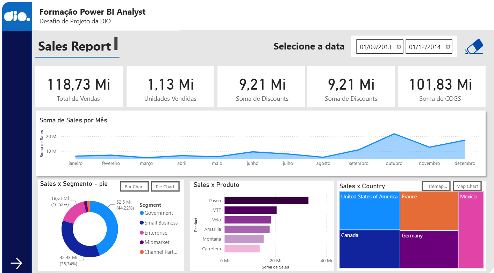
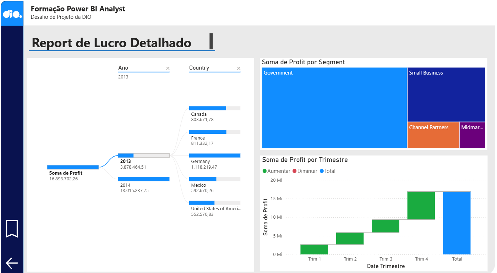
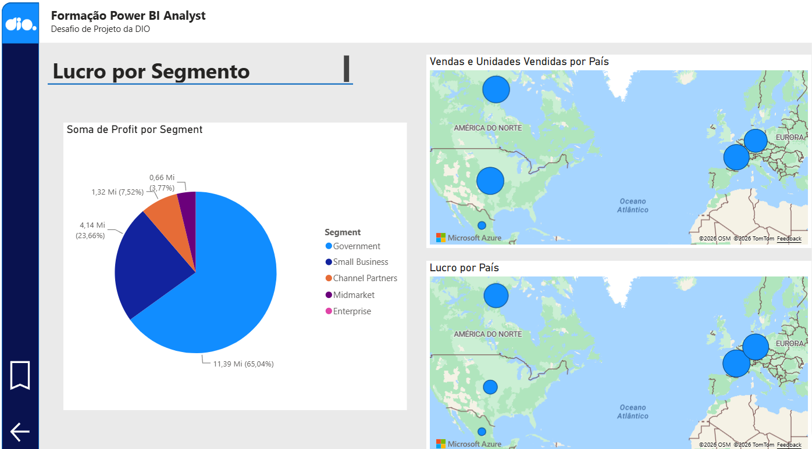

Relatório de vendas e lucro em Power BI
Dados · 2026
Sozinho — desafio de projeto da DIO
Estudo

O problema
Saber de onde vem o lucro — por segmento, por país e por trimestre — sem refazer tabela dinâmica a cada pergunta.
O que construí
Relatório em Power BI com três páginas: vendas do período, lucro detalhado e lucro por segmento.
Medidas em DAX. Total de vendas, unidades, desconto e custo saem de medidas, não de coluna calculada na base.
Do geral ao detalhe. A árvore de decomposição abre o lucro por ano e por país; a cascata mostra o trimestre que puxou o ano.
Stack
Power BI
DAX
ETL
Resultado
Do total de vendas ao lucro por segmento

